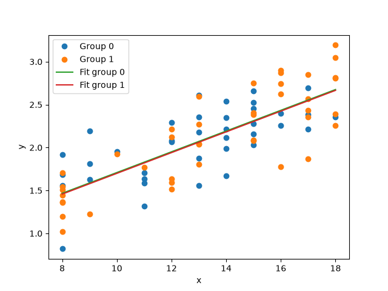
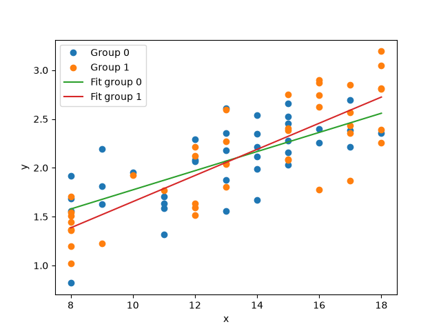

第 7 章: ダミー変数とカテゴリー変数¶
7.1 この章の地図¶
第 2 部は、回帰分析を、現実のデータに近づけます。最初の道具は、ダミー変数です。性別・地域・処置の有無のような、数ではない（質的な）変数を、0 と 1 で表して、回帰に入れます。この章では、ダミー変数の係数が、群の平均の差に、ちょうど等しいことを確かめ、傾きも群ごとに変える交差項と、カテゴリーが 3 つ以上のときの作り方、そして、すべてのダミー変数を入れると推定できなくなるダミー変数の罠を、関数とテストで確かめます。

| 項目 | 内容 |
|---|---|
| 計量経済学の題材 | ダミー変数、基準のカテゴリー、交差項、カテゴリー変数、ダミー変数の罠 |
| 使う Python の機能 | pandas の groupby・列の計算、dict と内包表記、乱数の生成器 |
| 新しく導入するライブラリ | なし |
| 完成形 | group_means、make_dummies、has_dummy_trap、with_interaction、draw_wage_sample |
| ファイル | 実装: lib/chapter07/dummies.py、lib/chapter07/plot.py（図）／テスト: test/chapter07/test_dummies.py、test/chapter07/test_plot.py（自分で書くときは、practice/chapter07/ に、同じ名前で作ります） |
| データ | 手計算用の 5 つの値と、母集団の式から作った乱数（対数賃金・教育年数・女性ダミー・地域） |
計量経済学の式とコードの対応¶
| 計量経済学 | 式 | コード |
|---|---|---|
| ダミー変数 | d = 1（その群）、0（それ以外） | make_dummies(values, base) |
| 切片が違う回帰 | y = α + δ·d + β·x + u | fit_ols(y, x に d を含める) |
| 交差項 | y = α + δ·d + β·x + γ·(x·d) + u | with_interaction(x, d) |
| 群の平均 | ȳ_g | group_means(y, groups) |
| ダミー変数の罠 | 全カテゴリーのダミー変数の和 = 定数項 | has_dummy_trap(x, constant) |
記号について: δ はダミー変数の係数、γ は交差項の係数です。一覧は、記号について を参照してください。
前提とする章¶
| できること | 章 |
|---|---|
重回帰 fit_ols、係数の名前、多重共線性のエラー |
第 3 章 |
| F 検定 | 第 5 章 |
7.2 準備¶
cd apps/econometrics-programming/python
uv sync
uv run pytest test/chapter07
22 passed
自分でコードを書くときは、practice/chapter07/ に、完成形と同じ名前（dummies.py・test_dummies.py）のファイルを作ります。
7.3 予想する¶
5 人の賃金を、グループ a（3 人）と b（2 人）で比べます。a は 10、12、14、b は 20、22 です。
- 定数項だけの回帰（y = α + u）の、α の推定値は、いくつですか
- b なら 1 になるダミー変数を入れた回帰（y = α + δ·d + u）の、α と δ の推定値は、いくつですか
- 基準を a から b に変えると、α と δ は、どうなりますか。当てはめ値は、変わりますか
- a と b のダミー変数を両方、定数項といっしょに入れると、どうなりますか
7.4 ダミー変数の考え方¶
定数項だけの回帰と、ダミー変数¶
定数項だけの回帰は、y の標本平均を推定します（最小二乗法で、残差の 2 乗の和を最小にする定数は、平均）。ダミー変数 d を足すと、d = 0 の群の平均が α、d = 1 の群の平均が α + δ になります。したがって、δ は、2 つの群の平均の差です。
基準のカテゴリー¶
カテゴリーが k 個あるとき、ダミー変数は、k − 1 個を作り、1 つを基準にします。基準を入れ替えても、係数の見え方（基準との差）が変わるだけで、当てはめ値は変わりません。
交差項¶
切片だけが違う（平行な）直線では、教育の効果（傾き）は、男女で同じです。傾きも変えるには、x とダミー変数の積（交差項）を足します。交差項の係数 γ は、傾きの群の間の差です。交差項つきの回帰は、群ごとに別々に回帰したものと、同じ結果になります。
ダミー変数の罠¶
カテゴリーのダミー変数を、すべて入れると、その和が、どの行でも 1 になり、定数項（すべて 1 の列）と同じになります。完全な線形関係なので、推定できません（第 3 章の多重共線性）。対処は、(1) 基準のダミー変数を 1 つ除く、(2) 定数項を外す、のどちらかです。
7.5 プログラミング¶
Red: 群の平均とダミー変数¶
予想 1・2 の手計算です。a の平均は 12、b の平均は 21 です。定数項だけの回帰の係数は、全体の平均 78 ÷ 5 = 15.6 です。ダミー変数を入れると、α = 12、δ = 21 − 12 = 9 です。
import numpy as np
import pandas as pd
import pytest
from lib.chapter03.multiple import fit_ols
from lib.chapter07.dummies import group_means, make_dummies
Y = pd.Series([10.0, 12.0, 14.0, 20.0, 22.0], name="y")
GROUP = pd.Series(["a", "a", "a", "b", "b"], name="group")
def test_グループごとの平均() -> None:
means = group_means(Y, GROUP)
assert means["a"] == pytest.approx(12)
assert means["b"] == pytest.approx(21)
def test_ダミー変数は基準のカテゴリーを除いて作る() -> None:
d = make_dummies(GROUP)
assert list(d.columns) == ["group_b"]
assert d["group_b"].tolist() == [0, 0, 0, 1, 1]
def test_基準のカテゴリーを指定できる() -> None:
d = make_dummies(GROUP, base="b")
assert list(d.columns) == ["group_a"]
assert d["group_a"].tolist() == [1, 1, 1, 0, 0]
def test_カテゴリーが3つならダミー変数は2つ() -> None:
region = pd.Series(["north", "south", "west", "south"], name="region")
d = make_dummies(region)
assert list(d.columns) == ["region_south", "region_west"]
assert d.sum(axis=1).tolist() == [0, 1, 1, 1]
def test_存在しない基準のカテゴリーは受け付けない() -> None:
with pytest.raises(ValueError, match="基準"):
make_dummies(GROUP, base="c")
def test_名前のないデータにも名前が付く() -> None:
d = make_dummies(pd.Series(["x", "y", "x"]))
assert list(d.columns) == ["d_y"]
Green: group_means と make_dummies を実装する¶
def group_means(y: pd.Series, groups: pd.Series) -> pd.Series:
"""グループごとの平均。"""
return y.groupby(groups).mean()
def make_dummies(values: pd.Series, base: str | None = None) -> pd.DataFrame:
"""カテゴリー変数から、ダミー変数（0 と 1）を作る。基準のカテゴリーは除く。
基準を指定しなければ、小さい順で最初のカテゴリーを基準にする。
"""
levels = sorted(values.unique())
reference = levels[0] if base is None else base
if reference not in levels:
raise ValueError(f"基準のカテゴリー {reference!r} が、データにない")
prefix = "d" if values.name is None else str(values.name)
return pd.DataFrame(
{
f"{prefix}_{level}": (values == level).astype(float)
for level in levels
if level != reference
},
index=values.index,
)
係数は、群の平均の差¶
def test_定数項だけの回帰の係数は標本平均() -> None:
result = fit_ols(Y, np.empty((5, 0)))
assert result.coefficients["const"] == pytest.approx(Y.mean())
def test_ダミー変数の係数は2つの群の平均の差() -> None:
result = fit_ols(Y, make_dummies(GROUP))
assert result.coefficients["const"] == pytest.approx(12)
assert result.coefficients["group_b"] == pytest.approx(21 - 12)
def test_基準を入れ替えると符号が変わるが当てはめ値は同じ() -> None:
a = fit_ols(Y, make_dummies(GROUP, base="a"))
b = fit_ols(Y, make_dummies(GROUP, base="b"))
assert b.coefficients["const"] == pytest.approx(21)
assert b.coefficients["group_a"] == pytest.approx(-9)
assert a.residuals == pytest.approx(b.residuals)
def test_カテゴリーのダミー変数の係数は基準との平均の差() -> None:
y = pd.Series([1.0, 3.0, 5.0, 6.0, 10.0, 12.0])
g = pd.Series(["p", "p", "q", "q", "r", "r"], name="g")
result = fit_ols(y, make_dummies(g))
assert result.coefficients["const"] == pytest.approx(2)
assert result.coefficients["g_q"] == pytest.approx(5.5 - 2)
assert result.coefficients["g_r"] == pytest.approx(11 - 2)
import numpy as np
import pandas as pd
from lib.chapter03.multiple import fit_ols
from lib.chapter07.dummies import group_means, make_dummies
y = pd.Series([10.0, 12.0, 14.0, 20.0, 22.0], name="y")
group = pd.Series(["a", "a", "a", "b", "b"], name="group")
print(group_means(y, group).to_dict())
print(fit_ols(y, np.empty((5, 0))).coefficients.to_dict())
print(fit_ols(y, make_dummies(group)).coefficients.to_dict())
print(fit_ols(y, make_dummies(group, base="b")).coefficients.to_dict())
{'a': 12.0, 'b': 21.0}
{'const': 15.6}
{'const': 12.0, 'group_b': 9.0}
{'const': 21.000000000000007, 'group_a': -9.000000000000009}
予想どおり、定数項だけの回帰は 15.6、ダミー変数ありは α = 12、δ = 9 です。基準を b に変えると、α = 21、δ = −9 です（浮動小数点の誤差を除いて）。当てはめ値は、変わりません（テストで確認）。
ダミー変数の罠¶
def has_dummy_trap(x: pd.DataFrame, constant: bool = True) -> bool:
"""ダミー変数の罠: 定数項があり、ダミー変数が全カテゴリー分そろっているか。
すべてのダミー変数の和が、どの行でも 1（定数項と同じ）になると、推定できない。
"""
return constant and bool((x.sum(axis=1) == 1).all())
def test_ダミー変数の罠() -> None:
assert has_dummy_trap(FULL)
assert not has_dummy_trap(make_dummies(GROUP))
assert not has_dummy_trap(FULL, constant=False)
with pytest.raises(ValueError, match="多重共線性"):
fit_ols(Y, FULL)
def test_定数項を外すと全カテゴリーの係数が群の平均になる() -> None:
result = fit_ols(Y, FULL, constant=False)
assert result.coefficients["a"] == pytest.approx(12)
assert result.coefficients["b"] == pytest.approx(21)
full = pd.DataFrame({"a": (group == "a") * 1.0, "b": (group == "b") * 1.0})
try:
fit_ols(y, full)
except ValueError as error:
print(error)
print(fit_ols(y, full, constant=False).coefficients.to_dict())
多重共線性（説明変数の間に、完全な線形関係がある）
{'a': 12.0, 'b': 21.0}
全カテゴリーのダミー変数と定数項を入れると、推定できません（予想 4）。定数項を外すと、各ダミー変数の係数が、そのまま群の平均になります。どちらも同じモデルですが、係数の意味が違います。
交差項¶
def with_interaction(x: pd.Series, d: pd.Series) -> pd.Series:
"""交差項（2 つの変数の積）。"""
product = x * d
product.name = f"{x.name}:{d.name}"
return product
def test_交差項は2つの変数の積() -> None:
x = pd.Series([1.0, 2.0, 3.0, 4.0], name="x")
d = pd.Series([0.0, 1.0, 0.0, 1.0], name="d")
z = with_interaction(x, d)
assert z.name == "x:d"
assert z.tolist() == [0, 2, 0, 4]
乱数の賃金データ¶
母集団の式は、次のとおりです（真の値を、自分で決めます）。
lwage = 1 + 0.08·educ − 0.25·female + 0.02·educ·female + 地域の効果 + 0.3·u
地域の効果は、north が 0（基準）、south が −0.1、west が 0.15 です。教育 1 年あたりの賃金は、男性で 8%、女性で 10%（0.08 + 0.02）です。
def draw_wage_sample(n: int, rng: np.random.Generator) -> pd.DataFrame:
"""対数賃金・教育年数・女性ダミー・地域の標本を、母集団の式から作る。
lwage = 1 + 0.08·educ − 0.25·female + 0.02·educ·female + 地域の効果 + 0.3·u
"""
educ = rng.integers(8, 19, n)
female = rng.integers(0, 2, n)
region = rng.choice(list(REGION_EFFECTS), n)
effect = np.array([REGION_EFFECTS[r] for r in region])
u = rng.standard_normal(n)
lwage = 1 + 0.08 * educ - 0.25 * female + 0.02 * educ * female + effect + 0.3 * u
return pd.DataFrame(
{"lwage": lwage, "educ": educ, "female": female, "region": region}
)
def wage_sample(n: int = 20000) -> pd.DataFrame:
return draw_wage_sample(n, np.random.default_rng(0))
def test_標本の列とカテゴリー() -> None:
df = wage_sample(300)
assert list(df.columns) == ["lwage", "educ", "female", "region"]
assert set(df["region"]) == {"north", "south", "west"}
assert set(df["female"]) == {0, 1}
assert df["educ"].min() == 8
assert df["educ"].max() == 18
def test_同じ種なら同じ標本() -> None:
a = draw_wage_sample(50, np.random.default_rng(2))
b = draw_wage_sample(50, np.random.default_rng(2))
pd.testing.assert_frame_equal(a, b)
交差項つきの回帰が、男女別の回帰と、ちょうど一致することを、テストにします。
def test_交差項つきの回帰は群ごとの回帰と一致する() -> None:
df = wage_sample(400)
x = pd.DataFrame(
{
"educ": df["educ"],
"female": df["female"],
"educ:female": with_interaction(df["educ"], df["female"]),
}
)
pooled = fit_ols(df["lwage"], x).coefficients
male = df[df["female"] == 0]
female = df[df["female"] == 1]
m = fit_ols(male["lwage"], male[["educ"]]).coefficients
f = fit_ols(female["lwage"], female[["educ"]]).coefficients
assert pooled["const"] == pytest.approx(m["const"])
assert pooled["educ"] == pytest.approx(m["educ"])
assert pooled["const"] + pooled["female"] == pytest.approx(f["const"])
assert pooled["educ"] + pooled["educ:female"] == pytest.approx(f["educ"])
from lib.chapter07.dummies import draw_wage_sample, with_interaction
small = draw_wage_sample(400, np.random.default_rng(0))
xs = pd.DataFrame(
{
"educ": small["educ"],
"female": small["female"],
"educ:female": with_interaction(small["educ"], small["female"]),
}
)
joint = fit_ols(small["lwage"], xs).coefficients
male = small[small["female"] == 0]
female = small[small["female"] == 1]
m = fit_ols(male["lwage"], male[["educ"]]).coefficients
f = fit_ols(female["lwage"], female[["educ"]]).coefficients
print(round(joint["const"], 4), round(m["const"], 4))
print(round(joint["const"] + joint["female"], 4), round(f["const"], 4))
print(round(joint["educ"], 4), round(m["educ"], 4))
print(round(joint["educ"] + joint["educ:female"], 4), round(f["educ"], 4))
1.0165 1.0165
0.6685 0.6685
0.0774 0.0774
0.1043 0.1043
4 行とも、左（交差項つきの回帰から作った値）と、右（群ごとの回帰）が一致します。男性の傾き 0.0774（真の値 0.08）、女性の傾き 0.1043（真の値 0.10）です。
真の値の復元¶
n = 20000 の標本で、地域ダミー変数も入れて推定し、真の値と比べます。許容誤差は、標準誤差の 4 倍です。
def test_真の係数は標準誤差の4倍以内で復元される() -> None:
df = wage_sample()
result = fit_ols(df["lwage"], full_design(df))
truth = {
"const": 1.0,
"educ": 0.08,
"female": -0.25,
"educ:female": 0.02,
"region_south": -0.1,
"region_west": 0.15,
}
for name, value in truth.items():
assert abs(result.coefficients[name] - value) < 4 * result.standard_errors[name]
from lib.chapter07.dummies import draw_wage_sample, make_dummies, with_interaction
df = draw_wage_sample(20000, np.random.default_rng(0))
x = pd.DataFrame(
{
"educ": df["educ"],
"female": df["female"],
"educ:female": with_interaction(df["educ"], df["female"]),
}
).join(make_dummies(df["region"]))
result = fit_ols(df["lwage"], x)
print(pd.DataFrame({"est": result.coefficients, "se": result.standard_errors}).round(4))
est se
const 0.9824 0.0130
educ 0.0808 0.0009
female -0.2439 0.0180
educ:female 0.0193 0.0013
region_south -0.0913 0.0052
region_west 0.1594 0.0052
推定値は、真の値（1、0.08、−0.25、0.02、−0.1、0.15）に近く、標準誤差の 4 倍以内です。
図¶
plot_group_lines は、2 群のデータと回帰直線を描きます。切片だけが違う場合は、平行な直線（冒頭の図）、交差項がある場合は、傾きも違う直線です。

def test_群ごとにデータと直線を描く() -> None:
ax = plot_group_lines(X, Y, D, interaction=False).axes[0]
assert [line.get_label() for line in ax.lines] == [
"Group 0",
"Group 1",
"Fit group 0",
"Fit group 1",
]
assert ys(ax.lines[0]) == [1, 2, 3]
assert ys(ax.lines[1]) == [3, 4, 5]
def test_切片だけ違う直線は平行() -> None:
ax = plot_group_lines(X, Y, D, interaction=False).axes[0]
assert ys(ax.lines[2]) == pytest.approx([1, 3])
assert ys(ax.lines[3]) == pytest.approx([3, 5])
def test_交差項があると傾きも変わる() -> None:
y = Y.copy()
y[3:] = [3.0, 5.0, 7.0]
ax = plot_group_lines(X, y, D, interaction=True).axes[0]
assert ys(ax.lines[2]) == pytest.approx([1, 3])
assert ys(ax.lines[3]) == pytest.approx([3, 7])
def plot_group_lines(
x: NDArray[np.float64],
y: NDArray[np.float64],
d: NDArray[np.float64],
interaction: bool,
) -> Figure:
"""ダミー変数 d で分けた 2 群のデータと、回帰直線を描く。
interaction が偽なら、切片だけが違う（平行な）直線。真なら、傾きも違う直線。
"""
columns: dict[str, ArrayLike] = {"x": x, "d": d}
if interaction:
columns["x:d"] = with_interaction(
pd.Series(x, name="x"), pd.Series(d, name="d")
)
coefficients = fit_ols(y, pd.DataFrame(columns)).coefficients
fig, ax = plt.subplots()
ends = [float(np.min(x)), float(np.max(x))]
for group in (0, 1):
mask = d == group
ax.plot(x[mask], y[mask], "o", label=f"Group {group}")
for group in (0, 1):
intercept = coefficients["const"] + coefficients["d"] * group
slope = coefficients["x"] + (coefficients["x:d"] * group if interaction else 0)
ax.plot(ends, [intercept + slope * v for v in ends], label=f"Fit group {group}")
ax.set_xlabel("x")
ax.set_ylabel("y")
ax.legend()
plt.close(fig)
return fig
実行結果¶
uv run pytest test/chapter07
22 passed
7.6 規則で言うと¶
- ダミー変数の係数は、基準との平均の差。 他の変数を入れなければ、ちょうど等しい。他の変数を入れると、「他を一定にした」差になる
- カテゴリーが k 個なら、ダミー変数は k − 1 個。 基準の選び方は、係数の見え方を変えるだけで、モデルは変わらない
- 交差項は、群ごとの回帰。 交差項つきの回帰は、群を分けて別々に回帰したものと、同じ結果になる
混同しやすい点を、表にまとめます。
| 混同しやすい点 | 違い |
|---|---|
| ダミー変数の係数 と 群の平均 | 定数項ありなら、基準との差。定数項なしで全カテゴリーを入れると、群の平均そのもの |
| 交差項の係数 と ダミー変数の係数 | ダミー変数の係数は、x = 0 での群の差（切片の差）。交差項の係数は、傾きの差 |
| 交差項で傾きが違う と 差が有意 | 傾きの差が 0 かは、交差項の係数の t 検定（または、ダミー変数と交差項の F 検定）で調べる |
この方法が成り立たない場面¶
- x = 0 が、データにないとき、ダミー変数の係数は、読みにくくなります。 教育年数が 8〜18 年のデータで、「教育 0 年での男女差」は、データの外です。x から平均を引くと、「平均的な教育年数での差」に読み替えられます
- ダミー変数は、群の違いを表すだけで、理由を教えません。 女性ダミーが負でも、差別・職種・労働時間のどれによるものかは、わかりません
- 観測値が少ない群の係数は、不正確です。 群の観測値が、数個しかないと、標準誤差が大きくなります
7.7 練習問題¶
| 種類 | 問題 |
|---|---|
| 想起 | 本文を閉じて、「ダミー変数の係数が、2 群の平均の差に等しい」テスト（a が 10、12、14、b が 20、22 で、差 9）を書いてください |
| 生成 | 解説を見る前に、ダミー変数 d（0 か 1）の値で分けた、y の平均を、(d = 0 の平均, d = 1 の平均) の順で返す average_by_dummy(y, d) を、テストから書いてください。[10, 12, 14, 20, 22] と [0, 0, 0, 1, 1] で、いくつですか |
| 多様 | 地域の基準を north から west に変えると、south と north の係数は、どうなりますか。真の値（north 0、south −0.1、west 0.15）から、先に予想してから確かめてください |
| 交互 | 第 5 章の f_test で、「女性ダミーと交差項の係数が、両方 0（男女で賃金の決まり方が同じ）」を検定してください。結論は、どうなりますか |
解答（先に自分で取り組んでから、開いてください）
想起:
def test_ダミー変数の係数は群の平均の差() -> None:
y = pd.Series([10.0, 12.0, 14.0, 20.0, 22.0], name="y")
g = pd.Series(["a", "a", "a", "b", "b"], name="g")
coefficients = fit_ols(y, make_dummies(g)).coefficients
assert coefficients["g_b"] == pytest.approx(21 - 12)
生成:
def average_by_dummy(y, d):
values = np.asarray(y, dtype=float)
flags = np.asarray(d)
return float(values[flags == 0].mean()), float(values[flags == 1].mean())
def test_ダミー変数で分けた平均() -> None:
assert average_by_dummy([10, 12, 14, 20, 22], [0, 0, 0, 1, 1]) == (12, 21)
多様: west を基準にすると、south は −0.1 − 0.15 = −0.25、north は 0 − 0.15 = −0.15 です。基準が違うだけで、当てはめ値は、変わりません。
def test_基準を西に変えると地域の係数は基準との差になる() -> None:
df = draw_wage_sample(20000, np.random.default_rng(0))
base = pd.DataFrame({"educ": df["educ"], "female": df["female"]})
north = fit_ols(df["lwage"], base.join(make_dummies(df["region"])))
west = fit_ols(df["lwage"], base.join(make_dummies(df["region"], base="west")))
assert west.coefficients["region_south"] == pytest.approx(-0.25, abs=0.02)
assert west.coefficients["region_north"] == pytest.approx(-0.15, abs=0.02)
assert west.residuals == pytest.approx(north.residuals)
交互: 男女で賃金の決まり方が同じなら、女性ダミーと交差項の係数は、両方 0 です。n = 20000 では、p 値が、ほぼ 0 で、棄却されます（真の値は、−0.25 と 0.02）。
def test_男女で賃金の決まり方が同じという仮説は棄却される() -> None:
df = draw_wage_sample(20000, np.random.default_rng(0))
x = pd.DataFrame(
{
"educ": df["educ"],
"female": df["female"],
"educ:female": with_interaction(df["educ"], df["female"]),
}
)
assert f_test(df["lwage"], x, ["female", "educ:female"]).p_value < 1e-10
7.8 振り返り¶
- 予想した 4 つは、当たりましたか。基準を入れ替えても当てはめ値が変わらない理由を、説明できますか
- 交差項つきの回帰が、群ごとの回帰と一致する理由を、説明できますか
- ダミー変数の罠を、自分の分析で、どう避けますか
7.9 まとめ¶
- ダミー変数の係数が、2 群の平均の差にちょうど等しいこと（15.6 → α = 12、δ = 9）、基準を替えても当てはめ値が変わらないことを、テストで確かめた
- 全カテゴリーのダミー変数と定数項を入れると、推定できない（ダミー変数の罠）。定数項を外すと、係数は群の平均になる
- 交差項つきの回帰は、群ごとの回帰と、ちょうど一致する。乱数の賃金データで、真の係数が標準誤差の 4 倍以内で復元された
- 次の章では、誤差のばらつきが一定でないとき（不均一分散）の、標準誤差と検定を調べます